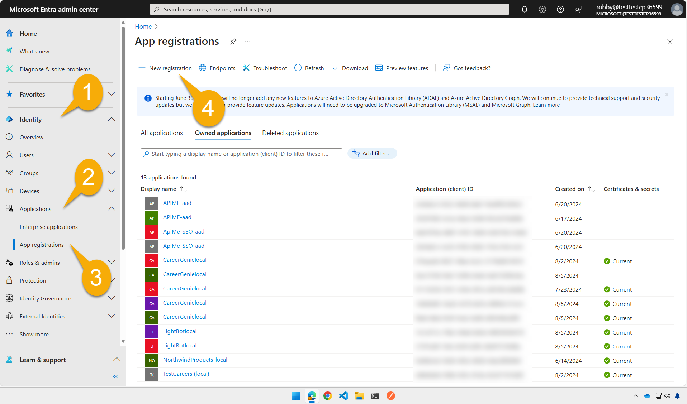
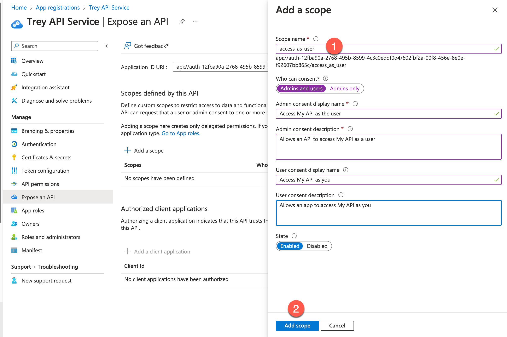
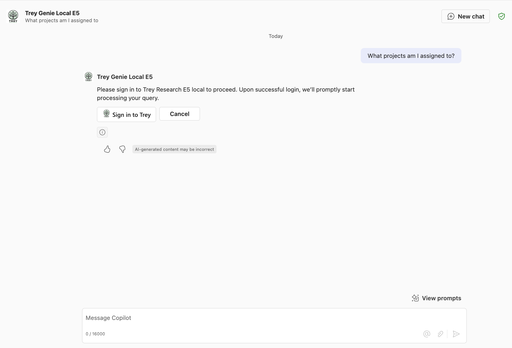
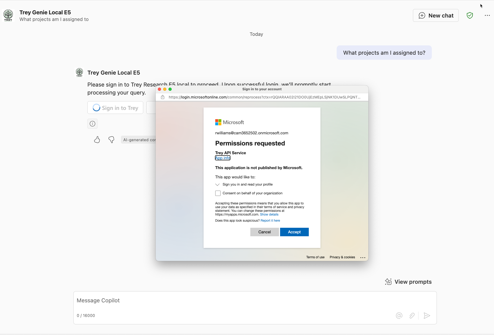
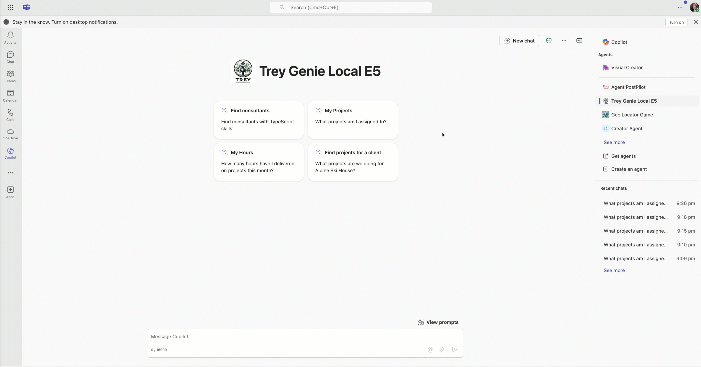

ラボ E6c - Entra ID 認証と Single Sign-on の追加
このラボでは、Microsoft Entra ID SSO 認証を追加し、ユーザーが既存の Entra ID 資格情報で認証できるようにします。
Microsoft 365 が AI モデルとオーケストレーションを提供する宣言型エージェントを構築したい場合は、これらのラボを実施してください。
- 🏁 はじめに
- 🔧 セットアップ
- 🧰 宣言型エージェントの基礎
- 🛠️ API をゼロから構築して統合する
- 🔐 認証
- 🔌 統合
Note
完成版サンプルでは永続的 developer tunnel を使用しています。そのため、永続的 developer tunnel を使用しない場合は調整が必要になります。Exercise 1 をご確認ください。
このラボでは、API を登録する際に Entra ID ポータルと Teams Developer Portal から後で使用するための値をいくつか保存する必要があります。保存する項目は次のとおりです。
API Base URL:
API's Entra ID application ID:
API's Tenant ID:
SSO Client registration:
API ID URI:
Exercise 1: 永続的 developer tunnel のセットアップ (任意)
既定では、Agents Toolkit はプロジェクトを起動するたびに新しい developer tunnel を作成し、ローカルで実行中の API への新しい URL を生成します。通常は Agents Toolkit が必要な場所を自動で更新するため問題ありませんが、このラボでは手動設定を行うため、デバッガーを開始するたびに Entra ID と Teams Developer Portal の URL を手動で更新する必要があります。したがって、URL が変わらない永続的 developer tunnel を設定することをおすすめします。
永続的 tunnel を設定しない場合はこちら ▶▶▶
Agents Toolkit が提供する developer tunnel をそのまま使用して構いません。プロジェクトが起動したら、ターミナル タブ 1️⃣ で "Start local tunnel" ターミナル 2️⃣ を選択し、Forwarding URL 3️⃣ をコピーします。この URL はプロジェクトを起動するたびに変わるため、アプリ登録の reply URL (Exercise 2 Step 1) と Teams Developer Portal の URL (Exercise 5 Step 1) を毎回手動で更新する必要があります。

Step 1: developer tunnel CLI のインストール
以下のコマンドで developer tunnel をインストールします。Developer Tunnel の完全な手順とダウンロード リンクはこちら。
| OS | コマンド |
|---|---|
| Windows | winget install Microsoft.devtunnel |
| Mac OS | brew install --cask devtunnel |
| Linux | curl -sL https://aka.ms/DevTunnelCliInstall | bash |
Tip
devtunnel コマンドが動作するように、パスを更新するためコマンド ラインを再起動する必要がある場合があります。
インストール後、ログインが必要です。Microsoft 365 アカウントでログインできます。
devtunnel user login
このラボの演習中は devtunnel コマンドを実行したままにしておいてください。再起動が必要になった場合は、前述の devtunnel user login を再実行してください。
Step 2: トンネルの作成とホスト
次に、Azure Functions のローカル ポート (7071) への永続的トンネルを設定します。以下のコマンドで "mytunnel" 部分は任意の名前に置き換えて構いません。
devtunnel create mytunnel -a --host-header unchanged
devtunnel port create mytunnel -p 7071
devtunnel host mytunnel
コマンド ラインに接続情報が表示されます。

“Connect via browser” の URL をコピーし、API Base URL として保存します。
Step 3: プロジェクトで動的に作成されるトンネルを無効化
ローカルでプロジェクトが実行中の場合は停止します。その後、.vscode\tasks.json を編集し、"Start Teams App Locally" タスクを探します。"Start local tunnel" の依存関係をコメントアウトし、代わりに "Start Azurite emulator" の依存関係を追加します。結果は次のようになります。
{
"label": "Start Teams App Locally",
"dependsOn": [
"Validate prerequisites",
//"Start local tunnel",
"Start Azurite emulator",
"Create resources",
"Build project",
"Start application"
],
"dependsOrder": "sequence"
},
Step 4: サーバー URL の手動上書き
env/.env.local を開き、OPENAPI_SERVER_URL の値を永続的トンネル URL に変更します。これは後続の手順で必要となる API base URL です。
Exercise 2: API 用の Entra ID アプリ登録
Step 1: 新しい Entra ID アプリ登録を追加
Microsoft 365 Admin center または https://entra.microsoft.com/ から Entra ID 管理センターを開きます。開発用テナントにサインインしていることを確認してください。
画面で "Identity" 1️⃣、"Applications" 2️⃣、"App registrations" 3️⃣ の順にクリックし、"+" 4️⃣ をクリックして新しいアプリ登録を追加します。

アプリケーションに "Trey API Service" などわかりやすい一意の名前を付けます 1️⃣。"Supported account types" では "Accounts in this organizational directory only (Microsoft only - single tenant)" を選択します 2️⃣。
"Register" 3️⃣ をクリックしてアプリを登録します。

Step 2: アプリ情報を安全な場所にコピー
API's Entra ID application ID となる Application ID (Client ID) 1️⃣ と、Directory (tenant) ID 2️⃣ をコピーしておきます。これらは後の手順で使用します。

Exercise 3: Teams Developer Portal で Microsoft Entra SSO クライアント ID を登録
これで API は Microsoft Entra ID と連携する準備が整いましたが、Microsoft 365 側はまだ何も認識していません。追加の資格情報を要求せずに API へ安全に接続できるよう、Teams Developer Portal で登録を行います。
Step 1: Teams Developer Portal で SSO クライアントを登録
https://dev.teams.microsoft.com にアクセスし、"Tools" 1️⃣ → "Microsoft Entra SSO client ID registration" 2️⃣ を選択します。

Register client ID を選択し、次の値を入力します。
| 項目 | 値 |
|---|---|
| Name | 覚えやすい名前 |
| Base URL | API base URL |
| Restrict usage by org | "My organization only" を選択 |
| Restrict usage by app | "Any Teams app" を選択 |
| Client (application) ID | API's Entra ID application ID |

Save を選択すると、Microsoft Entra SSO registration ID と Application ID URI が生成されます。これらを控えておき、プラグイン マニフェスト ファイルの設定で使用します。

永続的 developer tunnel URL を使用していない場合...
アプリケーションを Agents Toolkit で起動するたびに新しい tunnel URL になるため、その都度 "Base URL" フィールドを更新する必要があります。
Exercise 4: アプリケーション パッケージの更新
Step 1: プラグイン ファイルの更新
Visual Studio Code で作業フォルダーを開きます。appPackage フォルダー内の trey-plugin.json を開きます。ここには Open API Specification (OAS) ファイルに含まれない Copilot 用情報が保存されています。
Runtimes 内に auth プロパティがあり、"None" と設定されているため、現在は認証が無効です。以下のように変更して、Copilot に Microsoft Entra SSO registration ID を使用した認証を行うよう指示します。
"auth": {
"type": "OAuthPluginVault",
"reference_id": "<Microsoft Entra SSO registration ID>"
},
Exercise 5: API の Microsoft Entra アプリ登録を更新
Step 1: Application ID URI の更新
- Microsoft Entra admin center に戻り、API の Entra アプリ登録 (Trey API Service) を開きます。
- Expose an API を開き、Application ID URI を追加/編集します。Teams Developer Portal で生成された Application ID URI を貼り付け Save を選択します。
Step 2: API スコープの追加
API への呼び出しを検証するため、API Scope を公開する必要があります。ここではシンプルに "access_as_user" というスコープを設定します。
"Add a scope" で Scope name に "access_as_user" と入力します 1️⃣。そのほかの項目は次のとおりです。
| 項目 | 値 |
|---|---|
| Who can consent? | Admins and users |
| Admin consent display name | Access My API as the user |
| Admin consent description | Allows an API to access My API as a user |
| User consent display name | Access My API as you |
| User consent description | Allows an app to access My API as you |
| State | Enabled |
完了したら "Add Scope" 2️⃣ をクリックします。

Step 3: 承認済みクライアント アプリの追加
同じ Expose an API ページで Add a client application 1️⃣ を選択し、Microsoft のエンタープライズ トークン ストアのクライアント ID ab3be6b7-f5df-413d-ac2d-abf1e3fd9c0b 2️⃣ を追加します。スコープを選択して承認 3️⃣ し、Add application 4️⃣ を選択します。

Step 4: 認証用リダイレクト URI の追加
左ナビゲーションの Authentication 1️⃣ → Add a platform 2️⃣ → Web 3️⃣ を順に選択します。

Redirect URIs に https://teams.microsoft.com/api/platform/v1.0/oAuthConsentRedirect を貼り付け 1️⃣、Configure 2️⃣ を選択します。

Exercise 6: アプリケーション コードの更新
Step 1: JWT 検証ライブラリのインストール
作業ディレクトリでコマンド ラインを開き、以下を実行します。
npm i jwt-validate
これで Entra ID 認証トークンを検証するライブラリがインストールされます。
Warning
Microsoft は NodeJS 用の Entra ID トークン検証ライブラリを公式には提供していません。代わりに詳細なドキュメントが公開されています。
こちらの記事（著者: Microsoft MVP Andrew Connell）も参考になります。
このラボでは、Waldek Mastykarz 氏による コミュニティ提供ライブラリ を使用します。このライブラリはガイダンスに従うことを意図していますが、Microsoft によりサポートされていない点と MIT ライセンスである点にご注意ください。使用は自己責任でお願いします。
Step 2: API 用の環境変数を追加
作業フォルダーの env フォルダーにある .env.local を開き、テナント ID とアプリケーション ID URL を追加します。
APP_ID_URI=<Application ID URI>
API_TENANT_ID=<Directory (tenant) ID>
Application ID URI を手動で生成する場合
Application ID URI が表示されない場合は、一時的に以下の手順で生成してください:
1. Base64 Decode and Encode を開く
2. Exercise 3 Step 1 で生成された auth registration ID を貼り付けてデコード
3. デコード結果の 2 つ目の部分 (## 以降) を使用し、api://auth-<AuthConfigID_Decoded_SecondPart> 形式で URI を構築 (例: api://auth-16cfcd90-803e-40ba-8106-356aa4927bb9)
これらの値を Agents Toolkit で実行されるコード内で使用できるよう、作業フォルダー直下の teamsapp.local.yml も更新します。コメント "Generate runtime environment variables" を探し、STORAGE_ACCOUNT_CONNECTION_STRING の下に次を追加します。
APP_ID_URI: ${{APP_ID_URI}}
API_TENANT_ID: ${{API_TENANT_ID}}
最終的な yaml は次のようになります。
- uses: file/createOrUpdateEnvironmentFile
with:
target: ./.localConfigs
envs:
STORAGE_ACCOUNT_CONNECTION_STRING: ${{SECRET_STORAGE_ACCOUNT_CONNECTION_STRING}},
APP_ID_URI: ${{APP_ID_URI}}
API_TENANT_ID: ${{API_TENANT_ID}}
Step 3: Identity サービスの更新
この時点で SSO は動作し、アクセストークンが取得できますが、トークンを検証しないと安全ではありません。このステップではトークンを検証し、ユーザー名や ID などの情報を抽出するコードを追加します。
src/services フォルダーの IdentityService.ts を開きます。
ファイル上部の import 群に次を追加します。
import { TokenValidator, ValidateTokenOptions, getEntraJwksUri } from 'jwt-validate';
続いて、class Identity 宣言の直下に以下を追加します。
private validator: TokenValidator;
次にコメント
// ** INSERT REQUEST VALIDATION HERE (see Lab E6) **
を探し、次のコードで置き換えます。
// Try to validate the token and get user's basic information
try {
const { APP_ID_URI, API_TENANT_ID } = process.env;
const token = req.headers.get("Authorization")?.split(" ")[1];
if (!token) {
throw new HttpError(401, "Authorization token not found");
}
// create a new token validator for the Microsoft Entra common tenant
if (!this.validator) {
// We need a new validator object which we will continue to use on subsequent
// requests so it can cache the Entra ID signing keys
// For multitenant, use:
// const entraJwksUri = await getEntraJwksUri();
const entraJwksUri = await getEntraJwksUri(API_TENANT_ID);
this.validator = new TokenValidator({
jwksUri: entraJwksUri
});
console.log ("Token validator created");
}
const options: ValidateTokenOptions = {
audience: APP_ID_URI,
issuer: `https://sts.windows.net/${API_TENANT_ID}/`,
scp: ["access_as_user"],
};
// validate the token
const validToken = await this.validator.validateToken(token, options);
userId = validToken.oid;
userName = validToken.name;
userEmail = validToken.upn;
console.log(`Request ${this.requestNumber++}: Token is valid for user ${userName} (${userId})`);
}
catch (ex) {
// Token is missing or invalid - return a 401 error
console.error(ex);
throw new HttpError(401, "Unauthorized");
}
コードから学ぼう
新しいコードのポイント:
• Authorization ヘッダーから "Bearer
• 認証に失敗した場合は例外をスローし、Azure Function が 401 エラーを返します。
• jwks-validate ライブラリ用の validator を作成し、Entra ID の署名キーを取得します。
• ValidateTokenOptions で 3 つの条件を検証します: audience、issuer、scope。
• トークンが有効ならユーザーのクレーム (ID、名前、メール) が取得でき、ログイン中ユーザーの情報として使用します。
アプリがマルチテナントの場合
マルチテナント アプリのトークン検証については、上記コードのコメントを参照してください。
userId が取得できると、コードはそのユーザーの Consultant レコードを検索します。見つからない場合は新しく作成します。初回実行時には、ログインしたユーザー用の Consultant が既定のスキルやロールで作成されます。デモ用に変更したい場合は、Azure Storage Explorer を使用してください。

プロジェクト割り当ては Assignment テーブルに保存され、プロジェクト ID と割り当てられた consultant ID を参照しています。
Step 4: ライブラリのバージョン問題の回避策
現時点では jwt-validate パッケージが @types/jsonwebtoken との型エラーを出します。回避策としてプロジェクト ルートの tsconfig.json に "skipLibCheck": true を追加します。将来のライブラリ更新で不要になる可能性があります。
Exercise 7: アプリケーションのテスト
テスト前に appPackage\manifest.json の manifest version を更新します。
appPackageフォルダーのmanifest.jsonを開きます。- JSON の
versionフィールドを探します。次のようになっています:
"version": "1.0.0"
- バージョン番号を小さい値でインクリメントします。例:
"version": "1.0.1"
- ファイルを保存します。
Step 1: アプリケーションの再起動
アプリケーションを再起動し、Copilot アプリで Trey Genie を開きます。
プロンプト: 「担当しているプロジェクトを教えて」
エージェントを許可すると、初回のみ以下のようにサインインを求められます。

サインイン ボタンを選択後、アプリケーションの API が現在のユーザーとしてアクセスする許可を求められるので "Accept" をクリックします。

以降は、ユーザーがエージェントとやり取りする際に毎回サインインする必要がなく、スムーズに利用できます。

おめでとうございます！
ラボ E6c「SSO の追加」が完了しました！
何か面白いことを試してみませんか? たとえば、Copilot Connector をソリューションに追加してみましょう。